# Carga de datos y construcción del marco espacial.
# - "id": fila que identifica cada hectárea (unidad de muestreo).
# - "x" y "y": columna y fila de la cuadrícula de 10 (este) x 5 (norte).
# - "tallos": total de árboles con DAP >= 10 cm en la hectárea (unidad de observación).
data(BCI, BCI.env, package = "vegan")
Y <- as.matrix(BCI)
marco <- BCI.env
marco$id <- seq_len(nrow(marco))
marco$x <- (marco$UTM.EW - min(marco$UTM.EW)) / 100 + 1
marco$y <- (marco$UTM.NS - min(marco$UTM.NS)) / 100 + 1
marco$tallos <- rowSums(Y)
marco$riqueza <- vegan::specnumber(Y)
# Auditoría del marco: tamaño, especies, faltantes e incoherencias.
data.frame(
parcelas = nrow(Y), especies = ncol(Y),
nombres_especie_unicos = length(unique(colnames(Y))),
faltantes_conteos = sum(is.na(Y)),
conteos_negativos = sum(Y < 0),
coordenadas_duplicadas = sum(duplicated(marco[c("UTM.EW", "UTM.NS")])),
area_por_parcela_ha = 1
)
#> parcelas especies nombres_especie_unicos faltantes_conteos conteos_negativos
#> 1 50 225 225 0 0
#> coordenadas_duplicadas area_por_parcela_ha
#> 1 0 1
table(marco$Habitat, useNA = "ifany")
#>
#> OldHigh OldLow OldSlope Swamp Young
#> 8 26 12 2 23 Parcelas, cuadrantes e intercepción
Densidad, frecuencia y cobertura en marcos espaciales
3.1 Convertir espacio en observaciones
Cuando los organismos no se mueven —plantas sésiles, corales, algas incrustantes, organismos bentónicos—, la población no se recorre individuos a individuos: se recorre un territorio. El diseño de muestreo decide entonces dónde observar, cuánto espacio incluir en cada observación y qué regla convierte individuos, contactos o biomasa en un número. Esas tres decisiones no son detalles técnicos: el soporte (el área o la longitud sobre la que se mide) forma parte del estimando, porque cambiar el soporte puede cambiar la pregunta, no solo la precisión (Sutherland 2006; Henderson y Southwood 2016).
Considere una misma especie en un mismo lugar bajo las tres medidas habituales. La densidad es la cantidad de individuos por unidad de área; la frecuencia es la fracción de unidades de muestreo que contienen al menos un individuo; la cobertura es la fracción de la superficie que la especie ocupa. Una especie con pocos individuos pero muy grandes (una palma dominante) puede tener densidad baja y cobertura alta; una hierba gregaria puede tener densidad alta pero ocupar poco sustrato. Cada medida responde a una pregunta distinta, y presentarlas como sinónimos es uno de los errores más frecuentes al leer o escribir investigación ecológica.
3.2 Población, soporte y unidades
Del capítulo 1 conservamos el vocabulario con el que se declara un estimando: población objetivo, población accesible, marco y unidades. Para un marco espacial hace falta precisarlo con tres conceptos adicionales:
- El soporte es el área (o longitud) a la que pertenece cada medición.
- La extensión es el dominio que la muestra pretende cubrir.
- El grano es la resolución mínima a la que se observa.
Consideremos un humedal de 12 ha donde queremos densidades de un helecho acuático. Podemos definir el marco como una lista de 300 cuadrantes de \(20\times 20~\text{m}\): la extensión es todo el humedal, el grano es \(20\times20\) m y el soporte de cada conteo es \(400~\text{m}^{2}\). Si la misma pregunta se plantea con cuadrantes de \(10\times10\) m, el grano y el soporte cambian, y con ellos tanto la densidad esperada como la incertidumbre; la población objetivo, en cambio, sigue siendo el humedal.
Una parcela puede contener cientos de puntos de observación, pero eso no convierte a cada punto en una réplica. Si la unidad que recibió probabilidad de inclusión fue la parcela, los puntos internos son submuestras de esa parcela: tratarlos como réplicas independientes subestima la incertidumbre. Del mismo modo, “individuo” debe definirse antes de medir: en gramíneas y bambúes un tallo no es una macolla ni un geneto (un individuo genético), y las tres definiciones producen densidades distintas. La unidad de muestreo y la unidad de observación deben anotarse en la declaración del estimando.
3.3 Parcelas de área fija
La receta más simple es seleccionar parcelas del mismo tamaño y contar los individuos dentro de cada una. Si la parcela \(i\) tiene área \(a\) y conteo \(y_i\), bajo un MAS de \(n\) parcelas entre \(N\) parcelas iguales, la densidad estimada es
\[ \widehat D=\frac{\bar y}{a},\qquad \widehat V(\widehat D)= \left(1-\frac nN\right)\frac{s_y^2}{na^2}. \]
¿Por qué aparece \(n\), y no \(N\), dividiendo? La variabilidad entre unidades se resume en \(s_y^2\) (que divide entre \(n-1\)); al promediar \(n\) conteos, esa variabilidad se reduce en \(1/n\), y el factor \(1-n/N\) (la corrección por población finita) la ajusta cuando la fracción muestreada es apreciable. Si se divide por \(N\) se mezclaría una suma parcial de la muestra con el total de unidades del marco. Para un dominio de área \(A=Na\), el total estimado es \(\widehat Y=A\widehat D\): multiplique la densidad por el área, tal como en el capítulo anterior se extendía la media por \(N\). La expansión solo es válida si la selección representa el dominio y el área es conocida para todo el marco (Manly y Navarro Alberto 2015).
Cuando las parcelas no son iguales, ya no hay una única “densidad”. Suponga que \(y_i\) es el conteo y \(a_i\) el área de la parcela \(i\). Dos estimadores naturales responden a preguntas distintas:
\[ \widehat D_U=\frac1n\sum_{i\in s}\frac{y_i}{a_i},\qquad \widehat D_R=\frac{\sum_{i\in s}y_i}{\sum_{i\in s}a_i}. \]
El primero da la misma influencia a cada parcela (una media de densidades); el segundo da más influencia a las parcelas grandes (el cociente de totales). Si la selección dependiera del área, ninguno de los dos es correcto sin probabilidades de inclusión explícitas: en ese caso conviene un estimador ponderado por \(\pi_i\), como el de Horvitz–Thompson del capítulo 1.
3.4 Frecuencia, cobertura y escala
La frecuencia responde a una pregunta de presencia: para \(z_i=I(y_i>0)\), la frecuencia estimada es \(\widehat F=\bar z\), con varianza la de cualquier proporción bajo el diseño que se haya usado. Su utilidad operativa es enorme —un conteo puede ser incierto, pero la presencia en una unidad es más robusta— y también su pluralidad: la frecuencia depende del tamaño, la forma, la época y el protocolo de la unidad. Al aumentar el soporte disminuyen los ceros y la frecuencia suele crecer, aunque la densidad media permanezca parecida. La razón es de probabilidad: si una especie está en una fracción \(p\) del dominio y las unidades fueran independientes, un bloque de \(k\) celdas tiene presencia con probabilidad \(1-(1-p)^k\). Por eso comparar frecuencias entre estudios que usan cuadrantes de distinto tamaño es comparar instrumentos distintos.
La cobertura se mide de dos maneras. En la intercepción lineal, si \(l_{ij}\) es la longitud de línea ocupada por la especie \(j\) en la línea \(i\) de longitud \(L_i\),
\[ \widehat C_j=\frac{\sum_i l_{ij}}{\sum_i L_i}. \]
En la intercepción por puntos, se bajan \(M\) puntos y se anota cuántos caen sobre la especie: \(\widehat C_j=x_j/M\). El error binomial \(\sqrt{C(1-C)/M}\) supone puntos independientes; si los puntos están agrupados en líneas, la línea —no el punto— es la réplica, y la incertidumbre debe estimarse con líneas. La cobertura también debe declarar qué se mide: contacto superior del dosel, suma de capas o proyección sobre el suelo, porque la misma flora da números distintos para cada definición.
3.5 Tamaño, forma, borde y dependencia
No existe un tamaño óptimo de parcela desligado del estimando, del patrón espacial y del costo. Muchas parcelas pequeñas reparten mejor la muestra, aportan más réplicas y permiten detectar parches: pocas parcelas grandes reducen los ceros y el borde relativo y son más baratas por unidad de área, pero suavizan la heterogeneidad y dan menos observaciones independientes. La decisión se toma conociendo la fenología, la agregación y el presupuesto.
La forma importa por el borde. Para un rectángulo de lados \(u\) y \(v\), el cociente perímetro–área es \(P/A=2(1/u+1/v)\): entre rectángulos de igual área, el cuadrado minimiza el perímetro expuesto, una banda larga cruza más gradiente pero expone más borde y más árboles “a medias”. Las reglas de inclusión —qué hacer con un individuo exactamente en el lindero— deben fijarse antes de observar, o se introduce un sesgo sutil que ninguna fórmula de varianza corrige.
La dependencia espacial condiciona toda la lectura de estas medidas. El índice \(s^2/\bar y\) es descriptivo: valores altos son compatibles con agregación biológica, con un gradiente ambiental o con una mezcla de hábitats, y no los distingue. Un semivariograma descriptivo, \(\gamma(h)=\tfrac12(y_i-y_j)^2\) promediado por clases de distancia, examina si las unidades cercanas difieren menos que las lejanas. Es un diagnóstico de la estructura espacial —y un aviso sobre las réplicas—, pero no demuestra por sí solo un mecanismo biológico.
En la aplicación que sigue veremos cómo estos conceptos se materializan en el censo de Barro Colorado: la hectárea como unidad de muestreo y soporte, la dependencia del soporte para una especie de presencia parcial, el semivariograma como lectura de la agregación, y la decisión del origen de la teselación.
3.6 Aplicación reproducible: parcelas de Barro Colorado
vegan::BCI contiene conteos de árboles con diámetro a la altura del pecho de al menos 10 cm en 50 parcelas contiguas de una hectárea de Barro Colorado, Panamá; sus 225 columnas son especies y BCI.env aporta coordenadas y variables del sitio. La parcela forestal de 1000×500 m es un bosque tropical estacional de tierras bajas, casi todo de crecimiento antiguo, con un pequeño parche de secundario y un mosaico de meseta alta, meseta baja y ladera, más un área de suelo anegado (Condit et al. 2002; Harms et al. 2001; Pyke et al. 2001; Oksanen et al. 2024). El archivo distribuido por vegan procede de un censo histórico (Oksanen et al. 2024).
Las 50 hectáreas se tratan como población finita. El estimando primario es la densidad media de tallos con ese umbral (DAP ≥ 10 cm) por hectárea; resultados secundarios son la frecuencia de una especie focal y la riqueza por hectárea. La unidad de muestreo y de análisis es la hectárea; cada tallo es una unidad de observación. Este marco no es una muestra probabilística de los bosques tropicales: las conclusiones describen estas 50 hectáreas observadas.
3.6.1 Carga y auditoría
Cargamos, ensamblamos el marco y audítamos antes de cualquier estimación.
No aparecen faltantes, conteos negativos ni coordenadas duplicadas, y las 225 columnas son especies únicas. El factor Habitat resume la fisonomía del sitio con cinco clases geográficas: meseta y ladera de bosque antiguo (OldHigh, OldLow, OldSlope), área de suelo anegado (Swamp) y un parche de vegetación secundaria (Young). Las coordenadas representan los centros de las hectáreas, no la posición de cada árbol, así que el análisis espacial opera sobre la resolución de una hectárea.
3.6.2 Exploración comunitaria y espacial
Antes de estimar, describimos el marco con la comunidad y el espacio. La vectorización (colSums, colMeans) evita bucles sobre las 225 especies.
# Frecuencia de presencia (fracción de hectáreas con al menos un tallo) para
# toda la comunidad, calculada una sola vez.
frecuencia_especie <- colMeans(Y > 0)
# Las seis especies más abundantes y su frecuencia en 1 ha.
totales_sp <- sort(colSums(Y), decreasing = TRUE)
dominantes <- names(totales_sp)[1:6]
data.frame(
especie = dominantes,
tallos = unname(totales_sp[dominantes]),
frecuencia_1ha = round(frecuencia_especie[dominantes], 3)
)
#> especie tallos frecuencia_1ha
#> Faramea.occidentalis Faramea.occidentalis 1717 1.00
#> Trichilia.tuberculata Trichilia.tuberculata 1681 1.00
#> Alseis.blackiana Alseis.blackiana 983 1.00
#> Oenocarpus.mapora Oenocarpus.mapora 788 1.00
#> Poulsenia.armata Poulsenia.armata 755 0.92
#> Quararibea.asterolepis Quararibea.asterolepis 724 0.98
# Resumen a nivel de hectárea. La DE poblacional usa el factor (N-1)/N.
N <- nrow(marco)
c(media = mean(marco$tallos),
DE_poblacional = sd(marco$tallos) * sqrt((N - 1) / N),
indice_dispersion = var(marco$tallos) / mean(marco$tallos),
riqueza_media = mean(marco$riqueza))
#> media DE_poblacional indice_dispersion riqueza_media
#> 429.140000 42.125531 4.219546 90.780000plot(marco$x, marco$y, pch = 15, cex = 1.4,
col = hcl.colors(20, "YlGn")[cut(marco$tallos, 20, labels = FALSE)],
xlab = "Este (centenas de m)", ylab = "Norte (centenas de m)",
main = "Tallos por hectárea")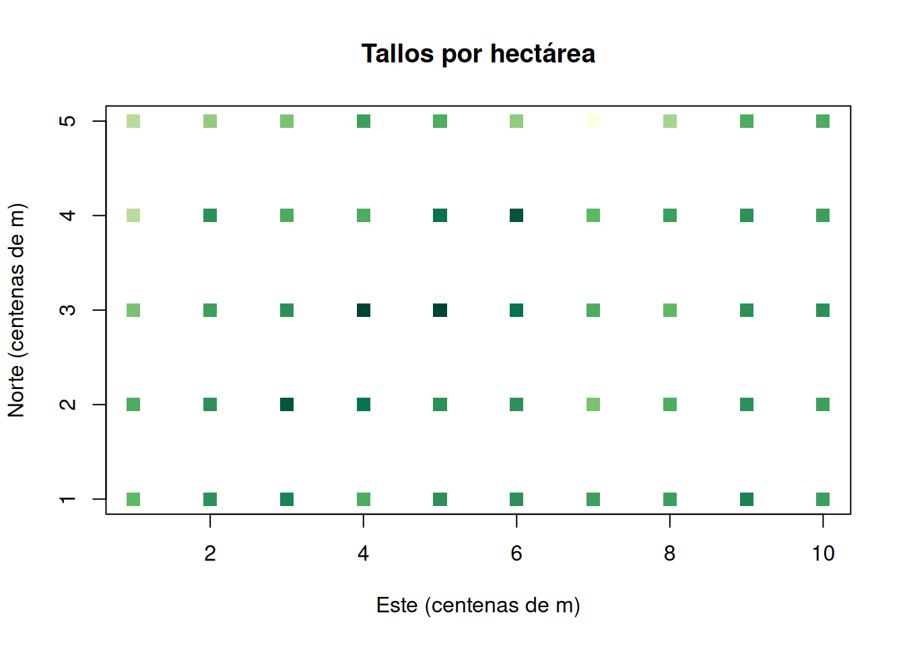
boxplot(tallos ~ Habitat, data = marco, las = 2, col = "grey85",
ylab = "Tallos por hectárea", xlab = "Hábitat")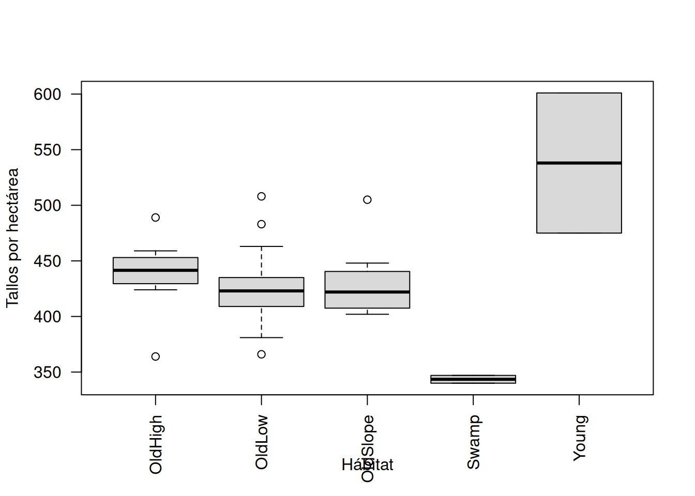
La figura 3.1 desplega los tallos de las 50 hectáreas en su ubicación real. La densidad oscila entre 344 y 538 tallos por hectárea, y el gradiente este—oeste con parches de colores más oscuros anticipa que unidades cercanas se parecen más que unidades lejanas: es la señal preliminar de dependencia espacial que examinaremos con el semivariograma. La figura 3.2 resume la misma información por hábitat. Las cajas revelan que la estructura física del sitio estructura al bosque: el suelo anegado concentra la menor densidad (343.5 tallos/ha, DE 4.9), porque pocas especies toleran la saturación de agua; el parche secundario presenta la mayor (538.0, con la mayor dispersión, DE 89.1, pero solo dos hectáreas); las clases de bosque antiguo quedan en un rango intermedio muy parecido (425–438), señal de que en estas 50 ha la fisonomía de crecimiento antiguo separa poco la densidad de tallos. El índice de dispersión (4.22 ≫ 1) cuantifica esa sobredispersión, pero —como advertimos en la teoría— no distingue entre agregación biológica, gradiente ambiental y mezcla de hábitats: para eso sirve el semivariograma, no el índice por sí solo.
Para los análisis de frecuencia trabajaremos con una especie de presencia parcial, Calophyllum.longifolium, presente en el 62 % de las hectáreas (31 de 50). Una especie casi ubicua como Faramea.occidentalis —la más abundante, presente en el 100 % de las hectáreas— no permite ver la dependencia del soporte: su frecuencia es 1 en cualquier agregación. La especie parcial sí lo permite, como veremos al cambiar de soporte.
3.6.3 MAS de hectáreas y estimación
Seleccionamos un MAS de \(n=15\) hectáreas entre las 50. La densidad se estima con la media muestral (soporte = 1 ha para todas las unidades), el total con \(A\widehat D=50\,\widehat D\), y la frecuencia de la especie focal con la proporción de hectáreas muestreadas en las que aparece.
set.seed(3301)
n <- 15
s <- marco[sample.int(N, n), ]
# Estimación puntual y por intervalo.
D_hat <- mean(s$tallos)
SE_D <- sqrt((1 - n / N) * var(s$tallos) / n) # fpc + varianza de la media
IC_D <- D_hat + qt(c(0.025, 0.975), n - 1) * SE_D
focal <- "Calophyllum.longifolium"
F_hat <- mean(Y[s$id, focal] > 0)
SE_F <- sqrt((1 - n / N) * var(Y[s$id, focal] > 0) / n)
round(c(densidad_tallos_ha = D_hat, SE = SE_D,
LI = IC_D[1], LS = IC_D[2],
total_tallos = 50 * D_hat,
frecuencia_focal = F_hat, SE_frecuencia = SE_F), 3)
#> densidad_tallos_ha SE LI LS
#> 433.667 13.335 405.067 462.267
#> total_tallos frecuencia_focal SE_frecuencia
#> 21683.333 0.600 0.110cols_mas <- ifelse(seq_len(N) %in% s$id, "#bc4749", "grey88")
plot(marco$x, marco$y, pch = 15, cex = 1.4, col = cols_mas,
xlab = "Este (centenas de m)", ylab = "Norte (centenas de m)",
main = "Muestra MAS de hectáreas")
legend("bottomleft", c("Seleccionada", "No seleccionada"),
pch = 15, col = c("#bc4749", "grey88"), bty = "n", cex = 0.9)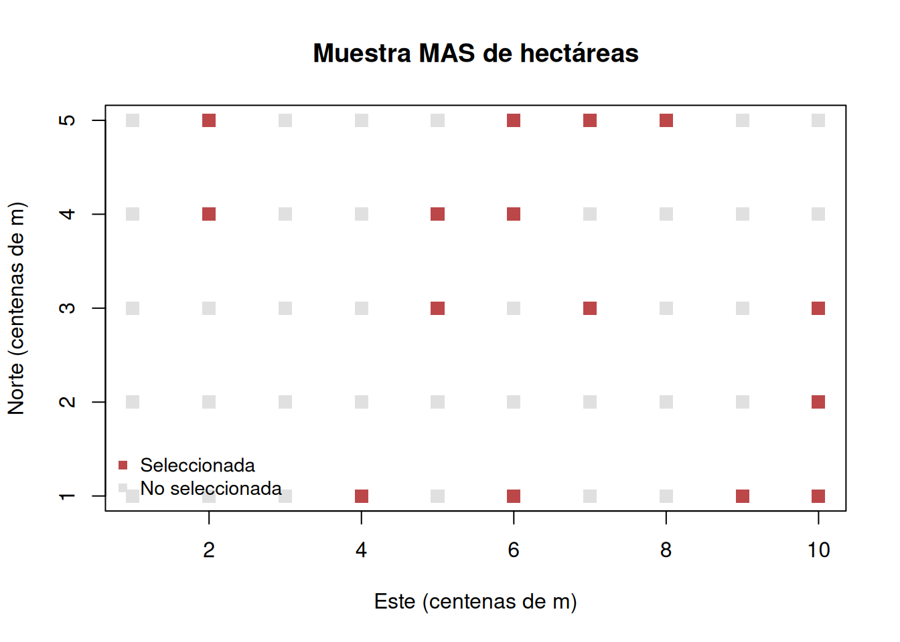
breaks_t <- pretty(range(marco$tallos), n = 7)
hist(marco$tallos, breaks = breaks_t, freq = FALSE, col = "grey90",
border = "white", xlab = "Tallos por hectárea", main = "")
hist(s$tallos, breaks = breaks_t, freq = FALSE, add = TRUE,
col = adjustcolor("#bc4749", 0.55), border = "white")
legend("topright", c("Población", "Muestra MAS"), fill = c("grey90", "#bc4749"),
bty = "n")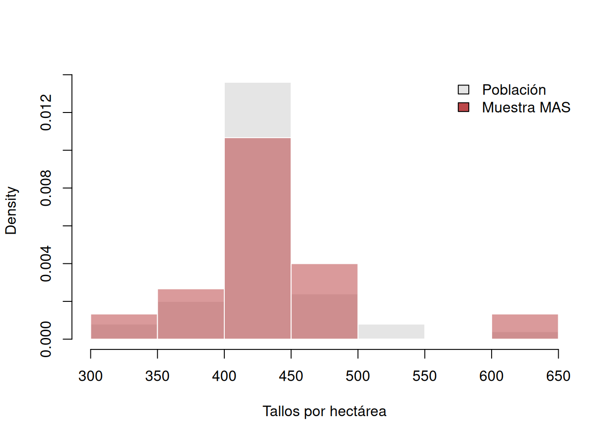
est_mas <- c(densidad = D_hat, total = 50 * D_hat, frecuencia = F_hat)
se_mas <- c(densidad = SE_D, total = 50 * SE_D, frecuencia = SE_F)
ic_mas <- cbind(LI = est_mas - qt(0.975, n - 1) * se_mas,
LS = est_mas + qt(0.975, n - 1) * se_mas)
ic_mas["frecuencia", ] <- pmin(1, pmax(0, ic_mas["frecuencia", ]))
verd_mas <- c(densidad = mean(marco$tallos), total = sum(marco$tallos),
frecuencia = frecuencia_especie[focal])
op <- par(mfrow = c(1, 3), mar = c(4, 4, 2, 1))
for (j in seq_along(est_mas)) {
plot(1, est_mas[j], ylim = range(c(ic_mas[j, ], verd_mas[j])),
xaxt = "n", xlab = "", ylab = names(est_mas)[j],
pch = 19, col = "#386641")
arrows(1, ic_mas[j, 1], 1, ic_mas[j, 2], angle = 90, code = 3, length = 0.08)
abline(h = verd_mas[j], lty = 2, col = "#bc4749")
}
par(op)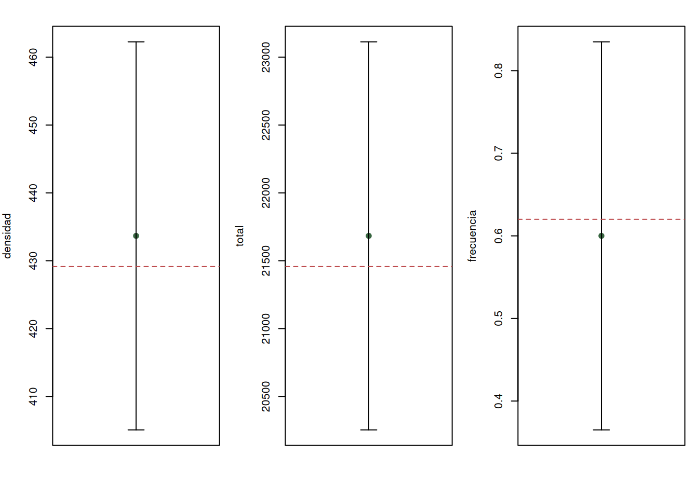
La figura 3.3 ubica las 15 hectáreas sorteadas: el azar dejó huecos y aglomeraciones, y eso es esperable —la defensa del MAS es el mecanismo, no la apariencia de una realización. La figura 3.4 compara la distribución de tallos de la población (gris) con la de la muestra (rojo); ambas comparten el rango y el centro, tal como exige la representatividad del sorteo. La figura 3.5 resume las tres estimaciones con sus intervalos: la densidad puntual (433.7 tallos/ha, EE 13.3) y el total (21 683; EE 667) quedan cerca del censo (429.1 y 21 457), con intervalos que incluyen la verdad; la frecuencia de Calophyllum (0.60, EE 0.11) tiene un intervalo ancho ([0.37, 0.84]) porque un indicador binario con 15 unidades aporta poca información; aquí la restricción natural a \([0,1]\) no llega a recortar el intervalo. La DE de la población (42.1) describe qué tan distintos son los totales por hectárea; el EE (13.3) describe cuánto puede desviarse una media muestral, y no deben confundirse.
3.6.4 Evaluación por repetición
Repetimos el diseño 2000 veces sobre el censo para comprobar que las fórmulas describen la incertidumbre real del estimador.
set.seed(3302)
B <- 2000
rep_mas <- t(vapply(seq_len(B), function(i) {
z <- sample(marco$tallos, n)
c(est = mean(z), se = sqrt((1 - n / N) * var(z) / n))
}, numeric(2)))
metricas_evaluacion <- function(x, verdad) c(
sesgo = mean(x[, "est"] - verdad),
DE_empirica = sd(x[, "est"]),
SE_medio = mean(x[, "se"]),
RMSE = sqrt(mean((x[, "est"] - verdad)^2)),
cobertura = mean(abs(x[, "est"] - verdad) <= qt(0.975, n - 1) * x[, "se"])
)
round(metricas_evaluacion(rep_mas, mean(marco$tallos)), 3)
#> sesgo DE_empirica SE_medio RMSE cobertura
#> 0.008 9.056 8.932 9.054 0.952hist(rep_mas[, "est"], breaks = 30, col = "#a7c957", border = "white",
xlab = "Densidad estimada (tallos/ha)", main = "")
abline(v = mean(marco$tallos), col = "#bc4749", lwd = 2)
abline(v = D_hat, col = "#386641", lwd = 2, lty = 2)
legend("topright", c("Densidad del censo", "Muestra observada"),
col = c("#bc4749", "#386641"), lty = c(1, 2), lwd = 2, bty = "n")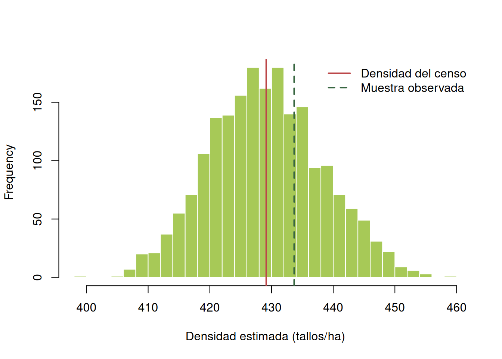
La figura 3.6 resume las propiedades de largo plazo del MAS para la densidad. La distribución se agrupa alrededor de la densidad del censo (429.1) con sesgo despreciable (0.008): el estimador no tiende a errar en una dirección. La DE empírica (9.06) coincide con el error estándar medio que predice la fórmula (8.80), lo que valida que \(SE=\sqrt{(1-n/N)s^2/n}\) describe bien la variación real del estimador. La cobertura del 94 % extiende el resultado al intervalo: aproximadamente 94 de cada 100 intervalos del 95 % capturan la densidad verdadera. La muestra puntual (433.7, línea verde) es uno de esos miles de resultados. Esta verificación no reemplaza el diagnóstico: validar el sorteo sobre este censo no certifica que el marco sea representativo de otro bosque.
3.6.5 Modelo de conteo con hábitat
La varianza entre hectáreas supera a la media (dispersión 4.22), condición típica de conteos ecológicos. Ajustamos un modelo Poisson para tallos en función del hábitat y medimos su sobredispersión; después reajustamos con cuasi-Poisson, que mantiene los coeficientes y corrige los errores estándar.
# Poisson: los conteos son enteros, pero el reloj de Poisson supone varianza = media.
modelo_pois <- glm(tallos ~ Habitat, family = poisson, data = marco)
dispersion <- sum(residuals(modelo_pois, type = "pearson")^2) /
df.residual(modelo_pois)
modelo_qp <- glm(tallos ~ Habitat, family = quasipoisson, data = marco)
c(dispersion_Poisson = dispersion, AIC_Poisson = AIC(modelo_pois))
#> dispersion_Poisson AIC_Poisson
#> 2.475217 515.353594
coef(summary(modelo_qp))
#> Estimate Std. Error t value Pr(>|t|)
#> (Intercept) 6.08136238 0.02658954 228.7125415 1.241452e-70
#> HabitatOldLow -0.02927321 0.03051239 -0.9593876 3.424901e-01
#> HabitatOldSlope -0.02087718 0.03447150 -0.6056360 5.477991e-01
#> HabitatSwamp -0.24217527 0.06565029 -3.6888680 6.049307e-04
#> HabitatYoung 0.20649618 0.05483932 3.7654768 4.798224e-04plot(fitted(modelo_qp), residuals(modelo_qp, type = "pearson"), pch = 19,
col = "grey40", cex = 0.8,
xlab = "Conteo ajustado (tallos/ha)", ylab = "Residuo de Pearson")
abline(h = 0, lty = 2)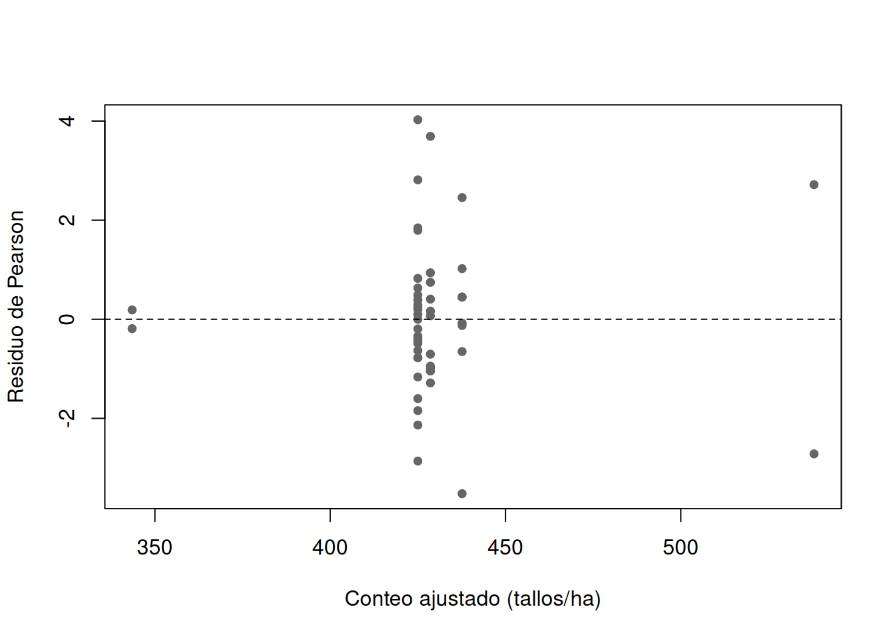
La dispersión de Pearson (2.48) confirma que Poisson subestima la variación: las hectáreas difieren más de lo que un proceso puramente aleatorio de tallos predeciría. En escala de medias, el cuasi-Poisson traduce los coeficientes a razones de densidad: frente a la meseta alta antigua (OldHigh), el suelo anegado reduce la densidad a un 79 % (coef. −0.24, \(p<0.001\)) —la saturación edáfica excluye buena parte del elenco—, y el parche secundario la eleva a un 123 % (coef. 0.21, \(p<0.001\)), coherente con rodales de regeneración densa. Las clases de bosque antiguo restantes no difieren de OldHigh (en este censo). La figura 3.7 muestra residuos de Pearson en una banda razonable alrededor de cero, sin patrón fuerte de embudo, y recuerda la advertencia del final: los coeficientes son asociaciones dentro de estas 50 hectáreas —con solo dos observaciones de Swamp y Young, sus intervalos son amplios— y no efectos causales ni predicciones para todo un bosque tropical.
3.6.6 Diagnóstico de dependencia espacial
Calculamos un semivariograma descriptivo a resolución de hectárea: para cada par de hectáreas, la mitad del cuadrado de la diferencia de tallos, promediada por clases de distancia.
# Semivarianza entre todos los pares de hectáreas (simétrica; se usa la mitad).
distancia <- as.matrix(dist(cbind(marco$x, marco$y)))
diferencia <- outer(marco$tallos, marco$tallos, "-")
tri <- upper.tri(distancia)
pares <- data.frame(distancia = distancia[tri],
semivarianza = 0.5 * diferencia[tri]^2)
pares$clase <- cut(pares$distancia,
breaks = c(0, 1.5, 2.5, 3.5, 5.5, Inf),
include.lowest = TRUE)
semivar <- aggregate(cbind(distancia, semivarianza) ~ clase, pares, mean)
semivar$n_pares <- as.vector(table(pares$clase))
print(transform(semivar, distancia = round(distancia, 1),
semivarianza = round(semivarianza, 1)))
#> clase distancia semivarianza n_pares
#> 1 [0,1.5] 1.2 1197.6 157
#> 2 (1.5,2.5] 2.1 1800.5 188
#> 3 (2.5,3.5] 3.0 2105.1 195
#> 4 (3.5,5.5] 4.4 2272.2 393
#> 5 (5.5,Inf] 7.1 1329.6 292plot(semivar$distancia, semivar$semivarianza, type = "b", pch = 19,
xlab = "Distancia media (centenas de m)",
ylab = "Semivarianza de tallos por hectárea")
text(semivar$distancia, semivar$semivarianza,
labels = semivar$n_pares, pos = 3, cex = 0.75)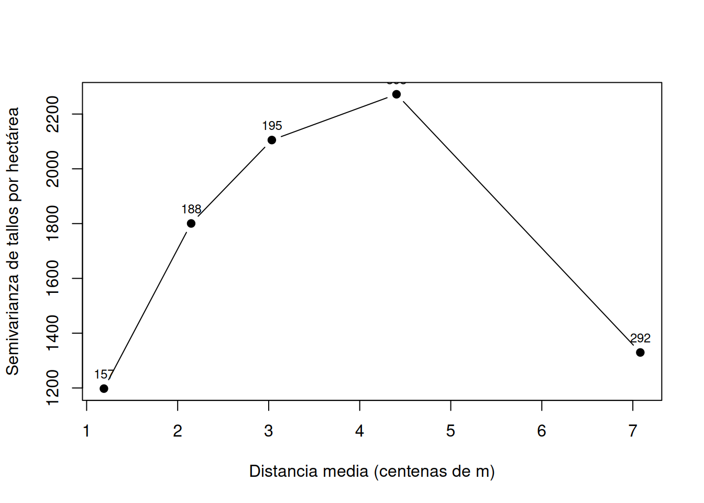
La figura 3.8 y la tabla subyacente revelan la estructura espacial del censo. La semivarianza crece de 1197 a 2272 entre hectáreas separadas 1.2 y 4.4 cientos de metros: las unidades cercanas se parecen más que las lejanas, el sello de la autocorrelación positiva que ya sospechábamos en el mapa. Ese ascenso es biológicamente esperable en un bosque tropical, donde la dispersión limitada y la asociación con el suelo y la topografía agregan a las especies a escalas de decenas de metros a hectáreas (Condit et al. 2002; Harms et al. 2001). La última clase advierte, en cambio, cómo el dominio acotado impone su límite: más allá de 5.5 (pares que cruzan la parcela entera este–oeste), la semivarianza cae a 1330, porque esos pares comparan extremos opuestos de un gradiente y dependen de unas pocas hectáreas de borde (292 pares). La nube de pares mostrada en los rótulos ayuda a no sobreinterpretar las clases extremas. El semivariograma describe la estructura observada; no demuestra un mecanismo de agregación ni corrige por sí solo la pérdida de réplicas independientes.
3.6.7 Cambio de soporte con datos observados
La cuadrícula tiene cinco filas por diez columnas. Agrupamos celdas contiguas sin generar conteos nuevos (solo sumamos los ya observados) y examinamos cómo cambian densidad, varianza y frecuencia con el soporte y su orientación.
# Suma de celdas contiguas en una teselación desplazable.
# "alto"/"ancho" en hectáreas; "desf_y"/"desf_x" fijan el origen de la cuadrícula.
agrupar <- function(z, alto, ancho, desf_y = 0, desf_x = 0) {
fi <- seq.int(1 + desf_y, nrow(z) - alto + 1, by = alto)
co <- seq.int(1 + desf_x, ncol(z) - ancho + 1, by = ancho)
if (!length(fi) || !length(co)) return(numeric())
unlist(lapply(fi, function(i) vapply(co, function(j)
sum(z[i:(i + alto - 1), j:(j + ancho - 1)]), 0.0)))
}
M_tallos <- xtabs(tallos ~ y + x, data = marco)
M_focal <- xtabs(Y[, focal] ~ marco$y + marco$x)
formas <- data.frame(alto = c(1, 1, 2, 1, 4), ancho = c(1, 2, 1, 4, 1))
escala <- do.call(rbind, lapply(seq_len(nrow(formas)), function(k) {
a <- formas$alto[k] * formas$ancho[k]
yt <- agrupar(M_tallos, formas$alto[k], formas$ancho[k])
yf <- agrupar(M_focal, formas$alto[k], formas$ancho[k])
data.frame(geometria = paste(formas$alto[k], "x", formas$ancho[k]),
area_ha = a, unidades = length(yt),
densidad = mean(yt / a), var_densidad = var(yt / a),
frecuencia_focal = mean(yf > 0))
}))
escala[-c(1, 2)] <- lapply(escala[-c(1, 2)], round, 3)
escala
#> geometria area_ha unidades densidad var_densidad frecuencia_focal
#> 1 1 x 1 1 50 429.140 1810.776 0.62
#> 2 1 x 2 2 25 429.140 1444.157 0.92
#> 3 2 x 1 2 20 417.375 717.339 0.90
#> 4 1 x 4 4 10 431.300 1083.456 1.00
#> 5 4 x 1 4 10 417.375 548.087 1.00cols_geo <- c("1 x 1" = "grey75", "1 x 2" = "#90a955", "2 x 1" = "#386641",
"1 x 4" = "#90a955", "4 x 1" = "#386641")
op <- par(mfrow = c(1, 2), mar = c(5, 4, 2, 1))
barplot(escala$densidad, names.arg = escala$geometria, las = 2,
col = cols_geo[escala$geometria], ylab = "Densidad media (tallos/ha)",
main = "Densidad")
abline(h = mean(marco$tallos), lty = 2)
barplot(escala$var_densidad, names.arg = escala$geometria, las = 2,
col = cols_geo[escala$geometria], ylab = "Varianza de la densidad",
main = "Varianza")
par(op)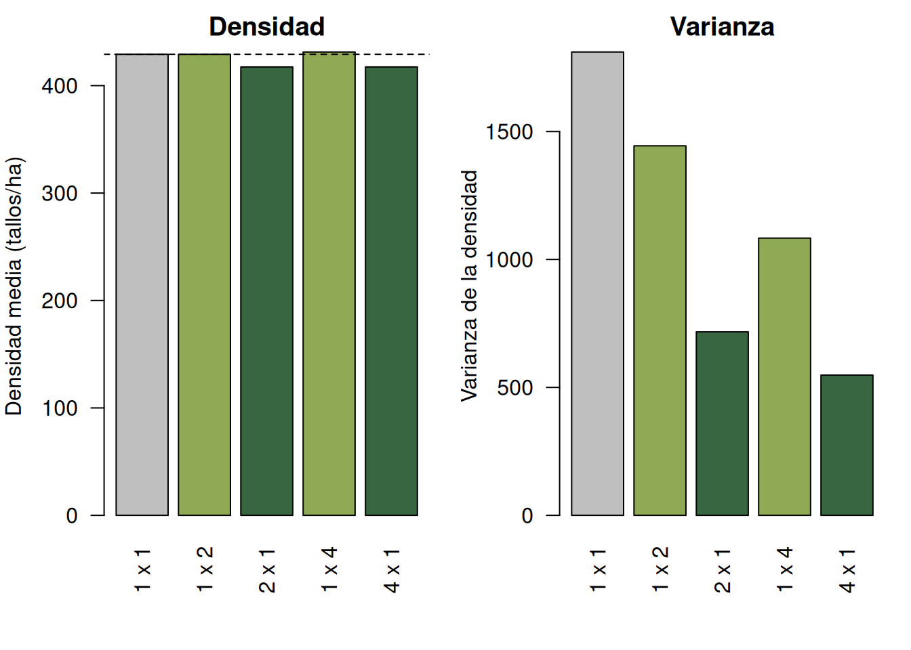
La figura 3.9 y la tabla resumen la lección del soporte. La densidad media se mantiene casi idéntica al cambiar la geometría (417.4–431.3 frente a 429.1 del censo): el cambio de soporte no sesga la densidad, porque los conteos se normalizan por el área. Lo que sí cambia drásticamente es la varianza entre unidades: cae de 1810.8 con parcelas de 1 ha a 1444.2 (bandas de 2) y 717.3 (2 ha apiladas), y sigue bajando con soportes de 4 ha (1083.5 horizontal, 548.1 vertical). Más área por unidad reduce ceros y promedia parches, y eso se paga en réplicas: 50 unidades de 1 ha frente a 10 de 4 ha. La orientación también decide: bandas que cruzan el eje largo este–oeste (1×2, 1×4) retienen más heterogeneidad que las apiladas norte–sur (2×1, 4×1), porque el gradiente del censo corre a lo largo de ese eje. La frecuencia de Calophyllum completa el argumento: 0.62 en 1 ha, 0.90–0.92 en soportes de 2 ha y 1.00 en los de 4 ha. El mismo número biológico —una especie agregada por dispersión limitada— produce frecuencias crecientes y varianzas decrecientes según cómo se corte el espacio: el soporte es parte del estimando.
3.6.8 Comparación de diseños e incertidumbre
Comparamos por repetición un MAS de 12 hectáreas con dos criterios de estratificación previa: (a) OldLow frente al resto —un criterio de fisonomía común— y (b) Young frente al resto —un criterio que aísla el parche secundario. La estimación estratificada pondera cada estrato por su tamaño (\(W_h=N_h/N\)); atendemos a que las filas conserven el nombre del estrato para leer los pesos.
# Estimador estratificado genérico: media ponderada por W_h = N_h / N.
evaluar_estrat <- function(grupo, Nh_gr, nh_local) {
por_h <- do.call(rbind, lapply(names(nh_local), function(h) {
u <- marco$tallos[grupo == h]
n_h <- unname(nh_local[h])
z <- sample(u, n_h)
c(h = h, media = mean(z),
var = (1 - n_h / length(u)) * var(z) / n_h)
}))
W <- as.numeric(Nh_gr[por_h[, "h"]] / sum(Nh_gr))
c(est = sum(W * as.numeric(por_h[, "media"])),
se = sqrt(sum(W^2 * as.numeric(por_h[, "var"]))))
}
# Criterio (a): OldLow frente a Otros (26 y 24 hectáreas), 6 + 6 observaciones.
estrato_a <- ifelse(marco$Habitat == "OldLow", "OldLow", "Otros")
Nh_a <- table(estrato_a)
nh_a <- c(OldLow = 6, Otros = 6)
set.seed(3303)
mas12 <- t(replicate(B, {
z <- sample(marco$tallos, 12)
c(est = mean(z), se = sqrt((1 - 12 / N) * var(z) / 12))
}))
est_oldlow <- t(replicate(B, evaluar_estrat(estrato_a, Nh_a, nh_a)))
# Criterio (b): Young (2 ha) frente a Resto (48 ha), 2 + 10 observaciones.
set.seed(3305)
estrato_b <- ifelse(marco$Habitat == "Young", "Young", "Resto")
Nh_b <- table(estrato_b)
nh_b <- c(Young = 2, Resto = 10)
est_young <- t(replicate(B, evaluar_estrat(estrato_b, Nh_b, nh_b)))
rbind(
MAS = metricas_evaluacion(mas12, mean(marco$tallos)),
Estrat_OldLow = metricas_evaluacion(est_oldlow, mean(marco$tallos)),
Estrat_Young = metricas_evaluacion(est_young, mean(marco$tallos))
)
#> sesgo DE_empirica SE_medio RMSE cobertura
#> MAS 0.02216667 10.23270 10.090666 10.230167 0.947
#> Estrat_OldLow 0.20269000 10.36966 10.150480 10.369053 0.940
#> Estrat_Young -0.13393600 9.31594 9.015733 9.314573 0.945boxplot(list(MAS = mas12[, "est"], OldLow = est_oldlow[, "est"],
Young = est_young[, "est"]),
col = c("grey80", "#90a955", "#386641"),
ylab = "Densidad estimada (tallos/ha)", las = 2,
names = c("MAS", "Estr. OldLow", "Estr. Young"))
abline(h = mean(marco$tallos), lty = 2)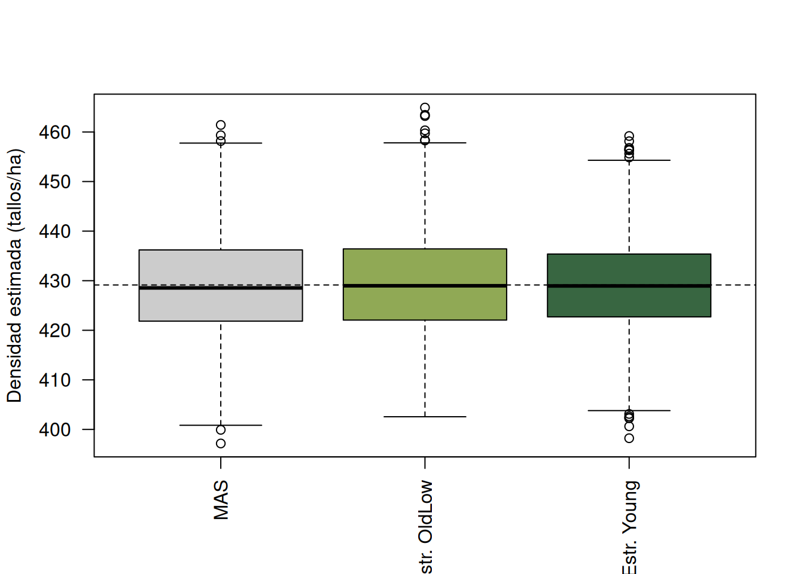
La figura 3.10 compara las tres estrategias en 2000 repeticiones y la tabla traduce la comparación en métricas. El mensaje más valioso es que estratificar no implica ganar precisión: el criterio OldLow frente a Otros apenas mueve el RMSE (10.54 frente a 10.67 del MAS; DE 10.53 frente a 10.67), porque las medias de ambos grupos casi coinciden (425 frente a 434 tallos/ha): separar por un criterio que no divide niveles promedios no reduce la varianza del estimador. El criterio Young frente a Resto, en cambio, sí gana (RMSE 9.31, DE 9.32, un 13 % inferior al MAS), porque aísla un parche de densidad claramente distinta (538 frente a 424.6). La lección operativa es la misma que en la teoría: el valor de la estratificación depende de que la variable previa separe niveles de la población y de que esos tamaños de estrato sean conocidos antes de muestrear. Los tres diseños son prácticamente insesgados (sesgos de −0.3 a 0.4) y la cobertura se mantiene cerca del 92 %, así que la diferencia de RMSE proviene de la varianza, no de un sesgo.
3.6.9 Sensibilidad al origen de la cuadrícula
Al teselar con bloques de 2×2 ha, el origen del desplazamiento (dónde empieza la cuadrícula) decide qué celdas quedan completas y cuáles se descartan en el borde. Repetimos la agregación con los cuatro orígenes posibles.
origenes <- expand.grid(desf_y = 0:1, desf_x = 0:1)
sens_origen <- do.call(rbind, lapply(seq_len(nrow(origenes)), function(k) {
yt <- agrupar(M_tallos, 2, 2, origenes$desf_y[k], origenes$desf_x[k])
data.frame(origen_y = origenes$desf_y[k], origen_x = origenes$desf_x[k],
unidades = length(yt), area_cubierta = 4 * length(yt),
densidad = mean(yt / 4))
}))
sens_origen$desviacion <- sens_origen$densidad - mean(marco$tallos)
round(sens_origen, 2)
#> origen_y origen_x unidades area_cubierta densidad desviacion
#> 1 0 0 10 40 417.38 -11.76
#> 2 1 0 10 40 431.52 2.38
#> 3 0 1 8 32 410.75 -18.39
#> 4 1 1 8 32 426.59 -2.55op <- par(mar = c(5, 5, 2, 1))
barplot(setNames(sens_origen$desviacion,
paste0("(", sens_origen$origen_y, ", ", sens_origen$origen_x, ")")),
las = 1, col = ifelse(sens_origen$desviacion < 0, "#bc4749", "#386641"),
ylab = "Desviación de la densidad (tallos/ha)")
abline(h = 0, lty = 2)
par(op)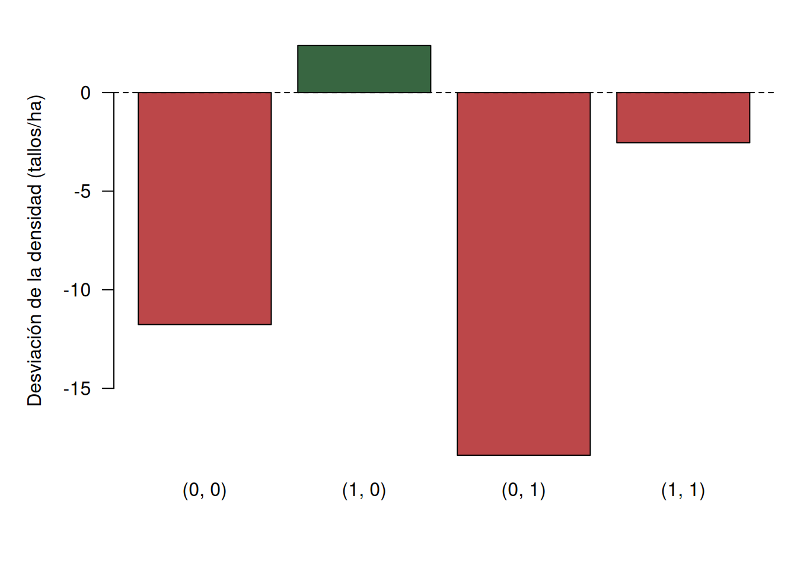
La figura 3.11 muestra que la decisión puramente administrativa del origen no es inocua: según dónde empiece la cuadrícula, la densidad estimada con bloques de 4 ha oscila entre 410.8 (−18.4 tallos/ha) y 431.5 (+2.4). Dos causas se combinan: el origen fija cuántas celdas completas se logran (ocho o diez), descartando bordes de extensión distinta, y el borde descartado tiene densidades que no compensan. Son opciones legítimas registrar las parcelas parciales con su área real, usar una teselación compatible con el borde o aleatorizar el origen y conservar esa regla en la inferencia. Lo que no es defendible es elegir el origen después de mirar los datos: el protocolo se fija antes de observar.
3.7 Interpretación y reproducibilidad
El MAS estima densidad, total y frecuencia dentro de estas 50 hectáreas; el modelo y el semivariograma describen estructura (heterogeneidad por hábitat y agregación espacial), pero no amplían el dominio a otros bosques. La sensibilidad al soporte y al origen muestra que las decisiones geométricas son sustantivas y deben registrarse: conservar ceros, área, coordenadas, versión de los datos y semillas.
list(
archivos = c("vegan::BCI", "vegan::BCI.env"),
version_vegan = as.character(packageVersion("vegan")),
version_R = R.version.string,
N = N, n = n,
ids_MAS = sort(s$id),
especie_focal = focal,
frecuencia_focal_1ha = unname(frecuencia_especie[focal]),
semillas = c(MAS = 3301, repeticion = 3302, comparacion = 3303),
geometrias_soporte = c("1x1", "1x2", "2x1", "1x4", "4x1"),
origen_teselacion = "2x2 ha",
estimando = "densidad media de tallos con DAP >= 10 cm por hectárea"
)
#> $archivos
#> [1] "vegan::BCI" "vegan::BCI.env"
#>
#> $version_vegan
#> [1] "2.7.5"
#>
#> $version_R
#> [1] "R version 4.5.2 (2025-10-31)"
#>
#> $N
#> [1] 50
#>
#> $n
#> [1] 15
#>
#> $ids_MAS
#> [1] 9 10 16 23 24 26 29 30 33 35 40 41 46 47 48
#>
#> $especie_focal
#> [1] "Calophyllum.longifolium"
#>
#> $frecuencia_focal_1ha
#> [1] 0.62
#>
#> $semillas
#> MAS repeticion comparacion
#> 3301 3302 3303
#>
#> $geometrias_soporte
#> [1] "1x1" "1x2" "2x1" "1x4" "4x1"
#>
#> $origen_teselacion
#> [1] "2x2 ha"
#>
#> $estimando
#> [1] "densidad media de tallos con DAP >= 10 cm por hectárea"
sessionInfo()
#> R version 4.5.2 (2025-10-31)
#> Platform: x86_64-pc-linux-gnu
#> Running under: Ubuntu 24.04.4 LTS
#>
#> Matrix products: default
#> BLAS: /usr/lib/x86_64-linux-gnu/openblas-pthread/libblas.so.3
#> LAPACK: /usr/lib/x86_64-linux-gnu/openblas-pthread/libopenblasp-r0.3.26.so; LAPACK version 3.12.0
#>
#> locale:
#> [1] LC_CTYPE=C.UTF-8 LC_NUMERIC=C LC_TIME=C.UTF-8
#> [4] LC_COLLATE=C.UTF-8 LC_MONETARY=C.UTF-8 LC_MESSAGES=C.UTF-8
#> [7] LC_PAPER=C.UTF-8 LC_NAME=C LC_ADDRESS=C
#> [10] LC_TELEPHONE=C LC_MEASUREMENT=C.UTF-8 LC_IDENTIFICATION=C
#>
#> time zone: UTC
#> tzcode source: system (glibc)
#>
#> attached base packages:
#> [1] stats graphics grDevices datasets utils methods base
#>
#> loaded via a namespace (and not attached):
#> [1] digest_0.6.39 permute_0.9-10 codetools_0.2-20 fastmap_1.2.0
#> [5] Matrix_1.7-4 mgcv_1.9-3 xfun_0.56 lattice_0.22-7
#> [9] splines_4.5.2 parallel_4.5.2 knitr_1.51 htmltools_0.5.9
#> [13] rmarkdown_2.30 cli_3.6.5 grid_4.5.2 renv_1.2.4
#> [17] vegan_2.7-5 compiler_4.5.2 tools_4.5.2 cluster_2.1.8.1
#> [21] nlme_3.1-168 evaluate_1.0.5 yaml_2.3.12 rlang_1.1.7
#> [25] jsonlite_2.0.0 MASS_7.3-65La lista fija lo esencial para reproducir cada cifra del capítulo: los identificadores de las 15 hectáreas sorteadas, la especie focal y su frecuencia en el censo, las semillas de cada evaluación, las geometrías de soporte y los parámetros de la teselación. Registrar el sorteo junto con la versión de R y de vegan que imprime sessionInfo() permite regenerar exactamente los mismos estimadores. Pero reproducir el cálculo no equivale a replicar la conclusión: el ordenamiento de precisión y las razones de densidad son válidos para estas 50 hectáreas observadas, no una ley de bosque tropical.
3.8 Ejercicios teóricos y numéricos
Estos ejercicios son cerrados y progresivos. En todos declare primero la población, la unidad de muestreo, el diseño y el estimando; distinga la DE de las unidades del EE del estimador, conserve la corrección por población finita cuando corresponda y exprese los resultados con sus unidades. Use valores no redondeados durante los cálculos y redondee solo al presentar.
3.8.1 Ejercicios teóricos
Ejercicio T1. Población, soporte, unidades y estimando
Para cada situación identifique población, soporte, unidad de muestreo, unidad de observación y un estimando coherente, y señale qué información falta para sustentar inferencia probabilística.
- Un humedal se divide en 500 cuadrantes de \(2\times2\) m y se cuentan las plántulas de helecho dentro de 40 de ellos.
- En un bosque se tienden 80 transectos de 50 m y se registra la longitud de línea ocupada por una liana.
- Una parcela permanente se divide en 100 subcuadrantes de 1 m² y se anota la presencia de una orquídea en cada uno.
- Se miden los 40 primeros árboles con DAP ≥ 30 cm encontrados a menos de 20 m de un sendero, para estimar la densidad de árboles grandes del bosque.
Explique por qué el cuarto caso no se vuelve probabilístico aunque se calcule una media y un intervalo convencional.
Ejercicio T2. Densidad bajo el MAS
En un MAS sin reemplazo de \(n\) parcelas iguales de área \(a\) entre \(N\) del mismo marco, use indicadores de inclusión para justificar que \(\bar y/a\) es insesgado para la densidad media y que \(A\bar y/a\) lo es para el total, con \(A=Na\). Después responda:
- ¿Por qué la corrección finita entra en la varianza de \(\widehat D\) y en qué casos es despreciable?
- ¿Puede el EE de \(\widehat D\) ser pequeño aunque la DE entre parcelas sea grande?
- ¿Qué cambia al aumentar \(n\): la variabilidad entre las unidades, la variabilidad del estimador, o ambas?
Ejercicio T3. Frecuencia y soporte
La frecuencia \(\widehat F=\bar z\) con \(z_i=I(y_i>0)\) depende del soporte.
- Proponga el argumento de probabilidad por el cual la frecuencia de una especie crece al aumentar el área de la unidad de muestreo, para unidades independientes.
- ¿Por qué esa relación se satura en 1 para una especie ubicua y qué implica para comparar estudios con cuadrantes de distinto tamaño?
- ¿Qué información captura la densidad y no la frecuencia, y cuándo la frecuencia es preferible en monitoreo por costo?
Ejercicio T4. Parcelas de áreas desiguales
Explique qué estima \(\widehat D_U\) y qué estima \(\widehat D_R\), y en qué situación cada uno es preferible. ¿Por qué ninguno de los dos es en general insesgado si la probabilidad de selección depende del área? ¿Qué haría falta para estimar bien la densidad con pesos explícitos?
Ejercicio T5. Tamaño, forma y borde
Compare y justifique: (i) muchas parcelas pequeñas frente a pocas grandes para estimar densidad de una especie gregaria; (ii) parcelas cuadradas frente a bandas largas frente a un gradiente de humedad; (iii) la regla de inclusión de individuos en el borde. Relacione cada elección con el cociente \(P/A\) y con los ceros de la muestra.
Ejercicio T6. Pseudorreplicación y dependencia espacial
Un estudio selecciona una parcela de 20×20 m en un bosque y la divide en 25 subcuadrantes, que trata como 25 réplicas.
- ¿Cuántas unidades primarias independientes sustentan la inferencia?
- Un semivariograma muestra semivarianzas bajas a distancias cortas. ¿Qué puede decir y qué no puede demostrar sobre el mecanismo dе agregación?
- El índice \(s^2/\bar y\) vale 4.2. ¿Qué hipótesis de estructura espacial son compatibles con ese valor y cuál necesita información adicional para distinguirse?
3.8.2 Ejercicios numéricos
Ejercicio N1. Densidad con corrección por población finita
Una ciénaga se divide en \(N=120\) cuadrantes de \(1~\text{m}^{2}\). Se toma un MAS sin reemplazo de \(n=12\) cuadrantes y los conteos de plántulas son
\[ 3,\ 5,\ 4,\ 0,\ 6,\ 3,\ 4,\ 5,\ 7,\ 4,\ 3,\ 4. \]
- Calcule media, varianza y DE muestrales del conteo.
- Estime la densidad por metro cuadrado y su EE con corrección por población finita.
- Construya un IC del 95 % para la densidad usando \(t_{11}\) y estime el total de plántulas con su intervalo.
Ejercicio N2. Áreas desiguales: D_U frente a D_R
Se observan cinco parcelas con área \(a_i\) (m²) y conteos \(y_i\):
| Parcela | \(a_i\) | \(y_i\) |
|---|---|---|
| 1 | 2 | 8 |
| 2 | 4 | 12 |
| 3 | 3 | 9 |
| 4 | 5 | 15 |
| 5 | 4 | 11 |
- Calcule \(\widehat D_U\) y \(\widehat D_R\).
- Explique la diferencia numérica en términos de influencia de cada parcela.
- Indique en qué diseño o marco los dos coincidirían.
Ejercicio N3. Frecuencia y su varianza
Utilice los conteos del ejercicio N1.
- Construya el indicador de presencia y estime la frecuencia poblacional.
- Calcule la varianza muestral del indicador, su EE con corrección finita y un IC del 95 % basado en \(t_{11}\), restringido a \([0,1]\).
- Comparando con el EE de la densidad del ejercicio N1, explique por qué el indicador binario aporta menos información por observación.
Ejercicio N4. Intercepción por puntos
Se bajan 80 puntos en una pradera y 12 caen sobre una especie.
- Estime su cobertura \(\widehat C\).
- Calcule el EE binomial y un IC de Wald del 95 %.
- ¿Qué supuesto debe cumplirse para que ese IC sea válido y qué ocurre si los puntos están agrupados en líneas?
Ejercicio N5. Intercepción lineal y replica por transecto
Cinco transectos de longitud \(L_i\) (m) registran longitudes ocupadas \(l_i\):
| Transecto | \(L_i\) | \(l_i\) |
|---|---|---|
| 1 | 20 | 5 |
| 2 | 25 | 8 |
| 3 | 20 | 4 |
| 4 | 25 | 9 |
| 5 | 30 | 7 |
- Calcule la cobertura como cociente de totales \(\widehat C_R=\sum l_i/\sum L_i\).
- Calcule la cobertura como media de razones \(\widehat C_U=(1/5)\sum l_i/L_i\).
- Compare ambas y discuta por qué la réplica es el transecto, no cada metro de línea.
Ejercicio N6. Frecuencia y tamaño del soporte
Una especie está presente en el 30 % de los cuadrantes de 1 m² de un muestreo (proporción \(p=0.30\)).
- Asumiendo presencia independiente entre cuadrantes, calcule la probabilidad esperada de presencia en un bloque de \(k=4\) cuadrantes contiguos (\(1-(1-p)^k\)).
- Compare con el patrón del censo de Barro Colorado: la frecuencia de
Calophyllum.longifoliumpasa de 0.62 (1 ha) a 0.92 (2 ha) y a 1.00 (4 ha). ¿Qué le dice la velocidad de ese ascenso sobre la dispersión de la especie?
3.8.3 Ejercicios guiados en R
Ejercicio R1. MAS de hectáreas: estimación y validación con repetición
Con los objetos marco, Y, N y la frecuencia_especie del capítulo tome un MAS de 15 hectáreas (semilla 3311) y estime densidad, total y frecuencia de Calophyllum.longifolium con sus EE e intervalos. Después repita el diseño 2000 veces (semilla 3312) y calcule sesgo, DE empírica, SE medio, RMSE y cobertura de la densidad; grafique la distribución de la densidad estimada y discuta por qué el EE medio debe parecerse a la DE empírica.
Ejercicio R2. Modelo de conteo y su diagnóstico
Ajuste Poisson y cuasi-Poisson de tallos por Habitat. Reporte la dispersión de Pearson, los coeficientes y sus razones de densidad respecto de OldHigh (con exp(coef(...))), y comente qué especies de hábitat difieren del crecimiento antiguo. Ajuste el semivariograma descriptivo y explique qué aporta a la decisión de cuántas réplicas considerar.
Ejercicio R3. Cambio de soporte y orientación
Con la función agrupar del capítulo, compare las geometrías 1×1, 1×2, 2×1, 1×4 y 4×1 para densidad, varianza y frecuencia de la especie focal. ¿Qué pareja de geometrías de la misma área (1×2 frente a 2×1, y 1×4 frente a 4×1) muestra el efecto de la orientación y por qué? Argumente con el gradiente este—oeste del censo.
Ejercicio R4. Estratificación: dos criterios previos
Repita la comparación del capítulo con semilla 3314 y 2000 repeticiones, con 12 hectáreas, para: (a) MAS, (b) estratificación OldLow frente a Otros (6+6) y (c) Young frente a Resto (2+10). Reporte sesgo, DE, SE medio, RMSE y cobertura; dibuje los boxplots y explique en qué criterio y por qué la estratificación reduce la varianza del estimador.
Ejercicio R5. Sensibilidad al origen de la teselación
Genere las cuatro teselaciones 2×2 con origenes del capítulo, calcule la desviación de la densidad frente al censo y dibuje el barplot. Discuta qué protocolo recomendaría (origen fijo, parcelas parciales o aleatorización) y por qué el origen no debe elegirse después de ver los datos.
NotaResultados breves de comprobación
T1. En el primer caso el marco puede ser la cuadrícula de 500 cuadrantes; en el segundo, los 80 transectos con su longitud; en el tercero, los 100 subcuadrantes de una parcela. Las unidades primarias son cuadrante, transecto y subcuadrante (pero los tres primeros son unidades de muestreo bien definidas; el tercero anida dentro de una sola parcela y no aporta 100 réplicas). En el cuarto caso el árbol observado depende del sendero y no se conoce una probabilidad positiva de inclusión para todos los árboles grandes del bosque; un IC convencional no corrige esa cobertura.
T2. Como \(\bar y\) es insesgado para la media del marco bajo MAS, dividir entre el área fija \(a\) conserva la insesgadez; \(A\bar y/a\) extiende por el área total. La fpc solo reduce la varianza del estimador y es despreciable si \(n/N\approx0\). La DE entre parcelas no cambia con \(n\): lo que disminuye es el EE del estimador.
T3. Con presencia independiente, bloques de \(k\) celdas tienen presencia con probabilidad \(1-(1-p)^k\), creciente en \(k\); una especie ubicua satura en 1 y cuadrantes grandes comparados con estudios de cuadrantes pequeños no son comparables. La frecuencia pierde la información de abundancia que la densidad conserva; en monitoreo suele preferirse por costo y robustez ante ceros.
T4. \(\widehat D_U\) da igual influencia a cada parcela; \(\widehat D_R\) da más influencia a las parcelas grandes. Si la selección depende del área, los estimadores no reflejan las probabilidades de inclusión; se requieren pesos \(\pi_i\) (Horvitz–Thompson).
T5. Parcelas pequeñas y numerosas reparten mejor la muestra y detectan parches, pero aportan más ceros y borde relativo; frente a un gradiente, bandas largas lo cruzan pero exponen más borde (\(P/A=2(1/u+1/v)\)). Las reglas de inclusión de borde se fijan antes de observar.
T6. Hay una unidad primaria (la parcela); los 25 subcuadrantes son submuestras. Un semivariograma con semivarianzas bajas a cortas distancias es compatible con autocorrelación, pero no demuestra un mecanismo. Un índice 4.2 es compatible con agregación, gradiente o mezcla de hábitats: distinguirlos exige información espacial o ambiental adicional.
N1. \(\bar y=4.0\) plántulas/m², \(s^2=3.0909\), \(s=1.7581\). La densidad estimada es \(\widehat D=4.0\) con EE 0.4815 (fpc 0.9) e IC \([2.940, 5.060]\). El total es 480 con EE 57.78 e IC \([352.83, 607.17]\).
N2. \(\widehat D_U=3.15\) y \(\widehat D_R=55/18=3.0556\) plántulas/m². La diferencia proviene de la influencia de cada parcela: el cociente de totales da más peso a las parcelas grandes; serían iguales si todas las áreas fueran iguales.
N3. El indicador tiene un 0 (la cuarta parcela): \(p=11/12=0.9167\), \(s_z^2=0.08333\), EE 0.0791. El IC restringido es \([0.743, 1.000]\). El EE relativo de una proporción binaria con 12 observaciones es mayor que el de la media del conteo: cada unidad binaria aporta menos información que un valor continuo.
N4. \(\widehat C=0.15\), EE \(=\sqrt{0.15\times0.85/80}=0.0399\) e IC de Wald \([0.072, 0.228]\). El IC supone puntos independientes; con puntos agrupados en líneas, la réplica es la línea y el EE binomial lo subestimaría.
N5. \(\widehat C_R=33/120=0.275\), mientras que \(\widehat C_U=(5/20+8/25+4/20+9/25+7/30)/5=0.2727\). Varían poco porque las áreas son similares, pero conceptualmente resumen estrategias distintas; la réplica es el transecto.
N6. Con \(p=0.30\), la presencia esperada en bloques de cuatro cuadrantes es \(1-(1-0.3)^4=0.7599\) si los cuadrantes fueran independientes. En BCI la frecuencia de Calophyllum sube de 0.62 a 0.92 y 1.00 mucho más rápido de lo que sugiere el azar para su \(p\): el ascenso empinado es lectura de agregación.
R1. Con la semilla 3311, densidad 431.6 (EE 12.7, IC aproximadamente [404.3, 458.9] tallos/ha; total 21 580) y frecuencia focal 0.667 (EE 0.105). Con la semilla 3312 y 2000 repeticiones: sesgo −0.06, DE 9.31, RMSE 9.31, SE medio 8.81 y cobertura 0.93; la DE empírica y el SE medio coinciden porque la fórmula del MAS describe la variación real.
R2. La dispersión de Pearson es 2.48, señal de sobredispersión. El cuasi-Poisson deja los coeficientes en escala de razones: Swamp ≈ 0.79 y Young ≈ 1.23 respecto de OldHigh; el semivariograma agrega que unidades cercanas son más semejantes, lo que desaconseja tratar las hectáreas vecinas como réplicas totalmente independientes.
R3. Las densidades se mantienen en 417.4–431.3 tallos/ha, mientras la varianza cae de 1810.8 (1×1) a 1444.2 (1×2), 717.3 (2×1), 1083.5 (1×4) y 548.1 (4×1); la frecuencia del focal sube de 0.62 a 0.90–1.00. La orientación importa: las bandas que cruzan el eje este—oeste (1×2, 1×4) conservan más heterogeneidad que las norte—sur (2×1, 4×1).
R4. Con la semilla 3314, el MAS da RMSE 10.74 y DE 10.74; la estratificación OldLow prácticamente no cambia el RMSE (10.57); la de Young lo reduce a 9.52 (DE 9.52). La ganancia aparece solo cuando el criterio separa niveles de densidad (Young, 538, frente a Resto, 424.6), no cuando divide por un criterio de fisonomía que no separa medias.
R5. Las desviaciones van de −18.39 a +2.38 tallos/ha según el origen (con ocho o diez celdas completas de 4 ha). La recomendación es fijar el origen o registrar parcelas parciales con su área antes de observar, y no elegir el origen después de ver los datos.
3.9 Actividad propuesta para el lector
Use vegan::varespec y vegan::varechem (comunidad y variables de suelo de 24 parcelas). Documente procedencia y limitaciones; verifique correspondencia de filas, faltantes, ceros y rangos; defina estratos, unidad de muestreo, soporte, unidad de observación y un estimando (densidad o frecuencia) para una especie focal; justifique una audaz elección de soporte y una regla de inclusión. Estime el parámetro con un MAS reproducible con su incertidumbre; evalúe por repetición sesgo, DE, RMSE y cobertura; compare una estratificación previa construida con una variable química y discuta si el criterio separa niveles; examine la asociación entre parcelas con la información disponible (ubicación o suelo); y evalúe la sensibilidad de la frecuencia y de la varianza al soporte (varios tamaños y orientación) y al origen de la teselación. Interprete el significado de los ceros, el alcance espacial de las conclusiones y qué cambia al usar frecuencia en lugar de abundancia.